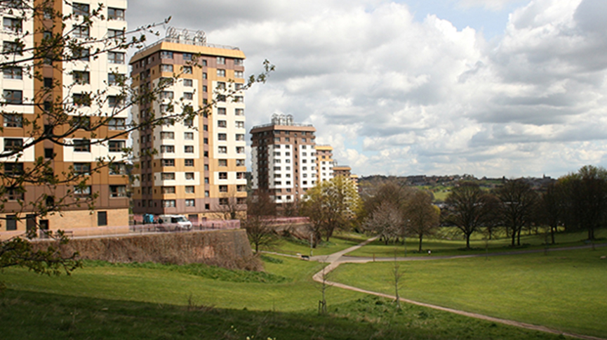
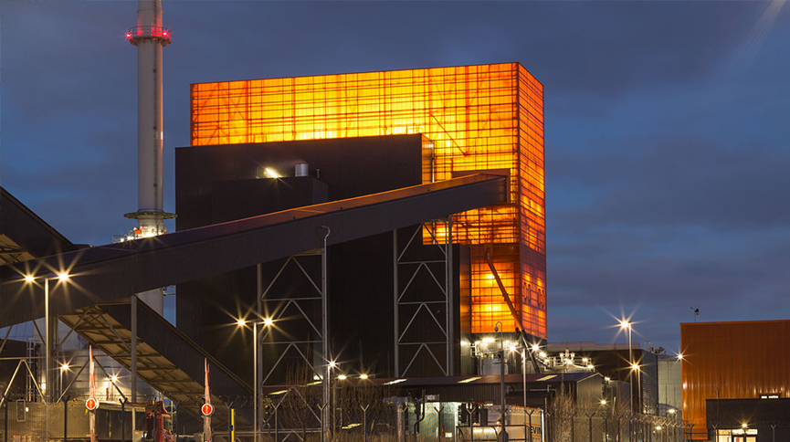
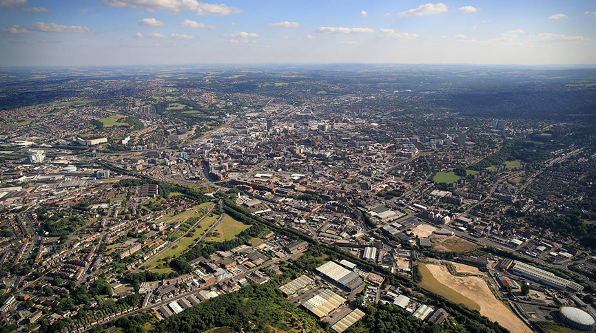

Sheffield has some of the worst air pollution in the country, with 46 hours of “high” and “very high” levels recorded in 2018 - worse than anywhere else in the UK.
Sheffield produced over 200,000 of household waste last year, with only a third recycled or composted - way off the EU’s target of 65%. Sheffielders also discarded a whopping 6900 tonnes on the street and in roadside bins in 2018.
5500 of Sheffield’s street trees have been chopped down in the last 5 years. Over the next 20 years 12,000 more will go.

Sheffield’s network of over 50 public parks has been proven to support mental well-being and social inclusion. However, with lower health levels in areas with low quality green space, there is concern that the benefits of green space may not always be available to support the people who need them most.

Sheffield’s main energy source is biomass. Although a renewable fuel, it is not a clean power source, and - like fossil fuels - emits carbon dioxide and other greenhouse gases, significantly contributing to Sheffield’s emissions since 2014.

Sheffield’s carbon emissions have increased by 9% (2005 - 2016), compared to a 6% decrease in the rest of the UK.